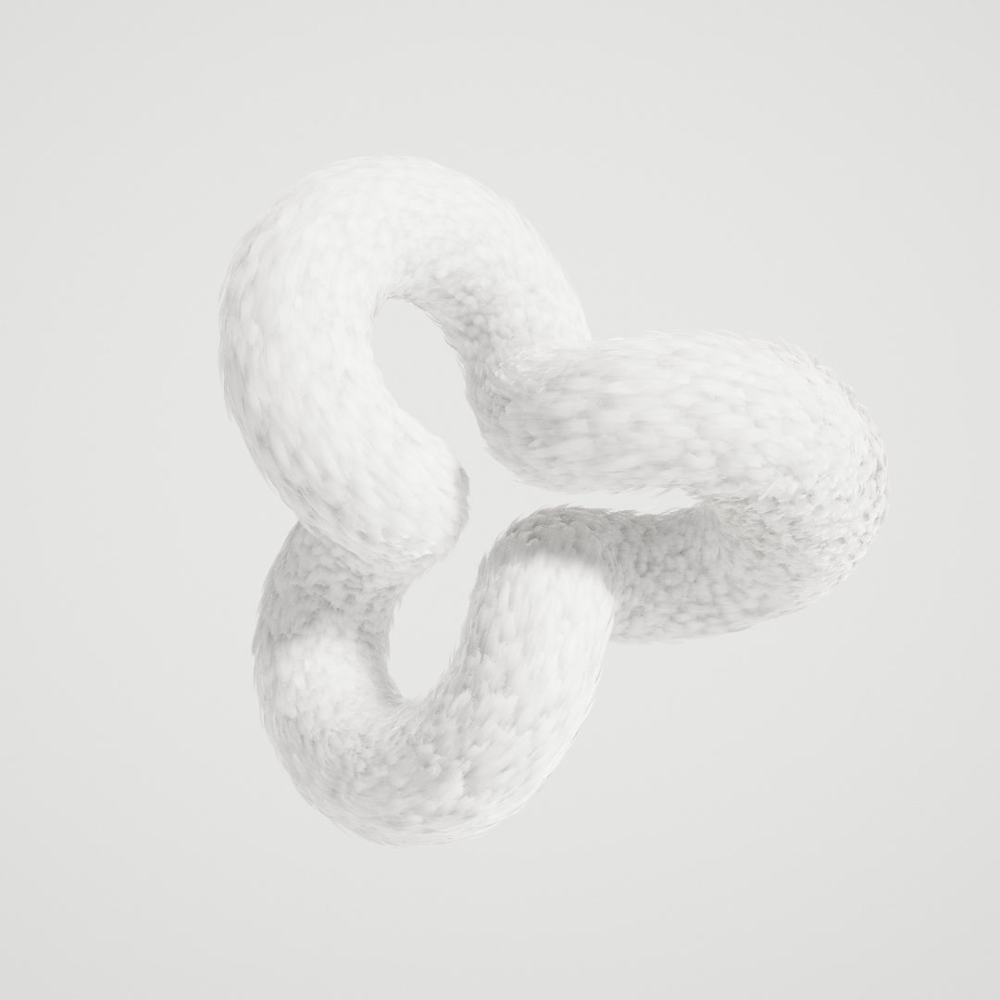

How Feather fluffs
A torus knot floats in a pale studio, covered in thousands of feathers that breathe, rouse and part under the pointer. Here is how the feathers are laid out, how each one is drawn and stacked, how light gets through them, and how one plumage turns into the next.
See it live
A plumage with no bird
Day 12's prompt was Feather. Rather than a bird, the piece puts a plumage on abstract forms: a torus, a (p, q) torus knot, or one of the classic knots (trefoil, figure-eight, saddle, crown, star). Every one is a tube around a closed centre line. Thousands of feathers are rooted on it, overlapping like a real coat. The coat is alive: it breathes, now and then it rouses, a wave running round the whole form the way a bird shakes itself out, and it parts where the pointer passes.
Each feather is a single card, but its vane, barbs, rachis and down are drawn per pixel, and light passes through it as it does through real white keratin. The forms render with the shared pipeline, which grew an opt-in temporal pass for this day. The sound is synthesized: there isn't a single sample in it.
Closed lines, as thick as they allow
Every form starts as a closed centre line. A (p, q) torus knot winds p times round the axis and q times through the hole, on a torus of radius R; q = 0 is a plain ring. The classic knots are written as curves over t (the trefoil, the figure-eight, a ring with a saddle's double wave or a crown's triple one, and a star that loops out five times) and scaled so their furthest point is R from the centre. Each line is resampled to points evenly spaced by arc length, so feathers spread evenly, and gets tangents and normals carried along it without twisting. On a closed line the transported normal doesn't come back to where it started, so the leftover angle is spread round the loop until it closes.
The tube can only be so thick before it runs into itself where the knot passes close. clearance finds the closest the line comes to another stretch of itself, across its own normal planes (so neighbours along the line don't count), and the tube's radius never goes past 0.38 of it, leaving room for the coat. Randomizing aims for full, chunky forms: knots with few crossings, sized up so the tube can be thick, a knot's tube about a seventh of its size and a ring's about a quarter of its radius. It never picks the shape already on show.
On the tube, straightened
Feathers are never placed on the knot itself. The tube is straightened: x runs along the centre line, y and z round it, a plain cylinder of the same length and radius. Roots are spread over that cylinder with a Poisson disc. Candidates are thrown on a fine grid, each cell getting as many as its area deserves, shuffled, and kept only if no kept root is closer than the spacing. On a closed form the distance wraps round the end, so the seam where the loop closes never shows.
Neighbours side by side would lie at the same height and their vanes would meet edge to edge. So each feather picks one of five levels that its neighbours across haven't taken, and its root moves forward along the tube by 4.5% of its length per level. Overlapping vanes are always staggered. Last, the skin's height under each feather is measured at a quarter, a half, three quarters and the whole of its length, for the vertex shader to clear.
The whole layout of 10–20 thousand feathers takes most of a second, so it runs in a worker. The form on show keeps animating until the new layout arrives as packed arrays.
A Poisson disc on a closed strip
The strip is the tube cut open along its length and unrolled; it wraps both ways, as a torus does. Strokes are the feathers' directions along the form, each with a little sweep of its own.
A card, cut per pixel
A feather is a quad a little wider than its vane. The fragment shader works in the feather's own frame, y from base to tip and x from the rachis to the edge, and decides what covers each pixel. The outline is a rounded sine, slightly different per feather. Barbs leave the rachis leaning toward the tip and curve further near the edge. They clump in groups of about seven, whose ends make the edge ragged, and at some group boundaries the vane splits in a V. The rachis tapers to the tip and is bare at the base. Under the vane, the base is down: wider than the vane, with loose wavy fibres.
Each detail turns itself off as it gets smaller than a few pixels. Barb relief and splits fade out as the barbs go sub-pixel, because below that they alias into sparkle and holes. The edge of the vane is one pixel of soft coverage; the temporal pass's sub-pixel jitter (below) turns it into a smooth outline.
The colour is the feather's own pattern over the palette's four colours (a pale downy base, the body, dark markings and an accent): plain, a gradient to the tip, bars, a streak along the rachis, or mottling. Markings follow the barbs, so bars bend into chevrons toward the tip.
On top of a feather's own pattern runs a gradient along the form: from the palette's colour toward white, a whole number of cycles round a closed form (Repeat), so a loop never shows a seam. Gradient sets how much it replaces the plain body colour. Randomizing keeps colour subtle: on a coloured palette the gradient carries it and the pattern barely shows, while white stays plain or nearly so. The skin under the coat takes the feathers' own base colour, so gaps fade into the plumage.
The vane, drawn the way the shader draws it
The shader's outline, barb, clump, split, down and rachis rules, run per pixel on a 2D canvas, without lighting. The real feather is also curved, cupped and twisted in the vertex shader.
One curve, so they never cross
Thousands of overlapping cards would cut through each other if each were pitched on its own. Instead every feather follows the same rule for how high it must be d along its length: h(d) = m · (0.006 + 0.09 d + 0.025 (1 − e−d / 0.07)), a quick lift off the root, then a gentle rise. Because the curve only increases and is the same for everyone, where two feathers overlap the one rooted first is always on top. The order of the stack is the order of the roots.
In the shader a feather is a rigid, curved card, so it can't follow the curve exactly: it is pitched just enough to clear the curve plus the skin falling away under it (the heights measured in the layout) at four points along it, then bent along an arc so its tip comes back down onto the coat, like a real rachis that rises steeply and then lies down. The factor m is Angle times a ruffle pattern: a fixed noise a couple of feathers across that depends only on the point of the skin, so every feather stacked there is lifted alike and the order holds. Curl bends each feather by its own amount, cups it across, and twists it a little.
A row of feathers from the side
Each feather here follows the shared curve exactly, from its root over the skin. Turn the curve off and each takes its own pitch: crossings are marked where a feather dips under the one rooted after it. With the curve, Angle can go anywhere and none cross.
Bent in the vertex shader
The feathers, laid out and stacked on the straight tube, are bent onto the real centre line in the vertex shader. The line is written each frame into a float texture of 2049 samples: position, tangent and normal. A point at x along the straight tube reads the line at u = x / length, and its y and z become offsets along the normal and binormal there. The normal is carried along the line by parallel transport, so the coat doesn't twist round the tube.
Because only the line lives on the GPU, a form can change without touching the feathers' buffers: breathing scales the tube's girth, and a morph moves the line itself.
Mostly air
A white feather isn't white paint. It is keratin (refractive index about 1.56) full of air: it scatters nearly everything and absorbs very little. So the shader splits light into what the vane reflects and what it passes on, and keeps the two summing to about 0.95. A dense vane reflects about 62% and passes about 30%. Thin tips, margins and loose fibres pass more and reflect less, and the foam-filled rachis reflects most and passes only 15%. How thin a pixel is comes from the vane itself: its distance to the edge, how close it is to the tip, and whether the barbs there have come apart into fibres.
Transmitted light is tinted warmer the thicker the sheet it went through, and the feather's pigment absorbs it too, so a backlit coloured feather looks deeper than a lit one. What a feather passes on depends on what is behind it: on the top side that's the body and the feathers below, open only where a lifted tip clears them. Seen from underneath it's the coat, which returns most of what it gets. Where vanes stack, the light the lower ones send back up through a feather brightens it: a stack reflects about 0.75 where one vane reflects 0.62.
Then the details that make it read as feathers rather than paper. The cortex is smooth, so the highlight is an anisotropic lobe, tight along the barbs and wide across them: a satin streak. Barbs and rachis are cylinders, so their normals turn away from their axes and the barbs catch light in fine lines. The down gets a soft sheen instead. All of it fades as it shrinks below a pixel, and roughness grows with how much the normal varies across the pixel, so nothing sparkles.
Reflected and transmitted, front to back
The shader's split, in 2D: albedo × R toward the front, tintthickness × pigment × T toward the back, with R and T from the same thin/thick map (0.62 and 0.30 for a dense vane, more passed at the edges, 0.15 through the rachis). No specular or environment here.
Noisy every frame, right on average
A coat is a dozen layers of half-transparent feathers in no fixed order. Sorting thousands of overlapping cards every frame is slow and still wrong where they intersect, so nothing is blended. Instead each feather is either there or not, per pixel, at random. A pixel of vane is dropped with the chance that it lets light through (its openness, from See-through: more at the thin edges and down, none on the rachis, never more than 60%), drawn from interleaved gradient noise shifted every frame and offset per feather. Whatever is behind shows through the hole, fully shaded. Over frames, stacked feathers multiply exactly as blended layers would, and order never matters.
Shadows use the same idea, with a twist. In the shadow pass a feather blocks the key at a fraction of points equal to the light it doesn't pass on (Shadow light sets how much a layer passes). Those points are pinned to the feather rather than redrawn each frame, so shadows don't crawl, and every shadow lookup averages over a disc at least 7 texels wide. Through one layer the shadow is partial; through three it is the product of three.
The noise is resolved by a temporal pass added to the pipeline for this day. Every frame the camera is jittered by a sub-pixel offset from a Halton (2, 3) sequence over 16 frames, and the frame is blended into a history: the history is reprojected with the prepass's velocity (taken from the nearest surface in the pixel's neighbourhood, so edges move with what's in front), resampled with a Catmull-Rom filter so it doesn't blur, and clipped in YCoCg to the current 3×3 neighbourhood's mean ± 1.25σ so stale colours can't ghost. Each frame contributes 10%, more where things move fast. The jitter also anti-aliases, so MSAA is off and the main pass draws straight over the prepass's depth, which saves most of its overdraw. When nothing moves, up to 32 frames are averaged into a clean still.
Three translucent feathers, one frame at a time
Each pixel walks the layers front to back and stops at the first one it keeps (chance 1 − openness), or shows the backdrop. No layer knows about the others, yet the average converges to front-to-back blending. The temporal average settles near the exact image and keeps a little noise (it forgets old frames); the still average keeps converging.
A white cyc, and the form turns instead of the camera
The default look is a pale, high-key studio: a big softbox key from the camera's side and a bright surround, as bright as the backdrop it's seen against (a white cyc), so the shaded side of a white coat is still lit. Some of it is deliberately unphysical. The backdrop is lifted above 1 in linear light so that after AgX it reads as paper white, not grey. Ambient occlusion runs at half strength with a short reach and an edge-preserving blur, because a white coat fills its own crevices with light and they should darken each overlap, not go dirty. The key's highlight comes from the environment's softbox only, not twice. And the shadows use a light 0.07 wide (as the tangent of its angular radius), smaller than the softbox, because a light that big would wash out every shadow a feather casts. A dark look exists too: a near-black set raked from the side. Each studio is baked once, and the other one in the background, so switching never waits.
The camera never moves round the form. If it did, you could orbit to the unlit side and see a grey lump. Dragging turns the form itself, about the camera's up and right axes, with a little momentum when you let go, and it spins slowly about the vertical (Spin). The camera only zooms. Every new form is framed from its bounding radius (centre line, tube and feathers) so the whole of it fits with a margin on any screen shape, and through a morph the camera follows the radius as it changes.
The light studio comes in seven colours (Backdrop colour): white, blush, peach, butter, sage, mist and lavender. A colour sets the backdrop, and the whole studio is tinted 60% of the way toward it, so the coat's shaded side picks it up while its lit side stays white. All seven are baked in the background after load. Randomizing picks one; through a morph the backdrop cross-fades over the whole morph and the studio's light swaps halfway, and when shrinking, nothing changes until the old form is gone.
The backdrop isn't part of the lit scene: it is a huge inward-facing sphere behind everything, the background colour lit a little above the form and falling off toward the edges like a studio sweep (Backdrop sets how much).
Breathing, rousing, parting
The tube's girth swells and settles slowly: breathing. Every few seconds the plumage rouses. A rouse starts at a random point on the form and runs one way round it, or spreads both ways. Feathers puff up as its front reaches them (by up to about 35°) and swing side to side, strongly, with neighbours nearly together, then settle behind it. Rouses come irregularly: usually several seconds apart, but a third of the time another follows within a second. Running one way round a loop, the wave would leave a step where it started, puffed just past the origin and untouched just before it, so the origin's puff tapers off over the 5% of the loop upstream of it.
The pointer is a ray into the form. Feathers near it lift and quiver, more the faster it moves. Now and then a swipe runs along the form like a hand brushing it, stirring the whole cross-section as it passes. Gusts of wind come from in front, 35–45° off the view direction and more often from the sides than from above or below, so the plumage blows away from the viewer at a slant: the windward side is pressed flat, the lee side lifts and flutters, everything leans downwind, and the flutter runs across the form with the gust. Pausing stops only the spin; the coat keeps answering.
A rouse running round a ring
The day's front and settle rule: a narrow Gaussian ahead of the front, an exponential settle behind it, times the rouse's envelope, with each feather swinging at its own phase.
One knot into another
Randomizing morphs the form into the next. There are two feather sets: the one on show, and one the new layout is built into. Both are bent onto the same centre line, which is blended between the old line and the new, along with the tube's radius. Meanwhile the old feathers shrink away one by one and the new ones grow in. The look blends with it: the palette's colours and every number (ruffle, angle, length, gradient...) ease across, while a pattern's kind stays with its own set.
Two closed loops can be lined up any way round. Blending point u of one with point u of the other would swirl the coat round the tube, so before a morph the new line is turned and maybe reversed to match: 128 offsets times two directions, scored by the summed squared distance between 64 matched points, and the cheapest wins. Randomizing never picks the shape on show, and the Transition setting can switch back to shrinking away, waiting for the form to be gone, and growing the new one.
Lining up two loops, then blending
Front projections of the day's centre lines. The thin lines join the points that blend into each other; line-up picks the offset and direction that make them shortest.
Never a mixed state
Randomizing draws the new values at once, but nothing on show may take them early: the form on show keeps reading a held copy of its own look until it's gone or the morph has begun. With Transition set to shrink, the order is strict. The form shrinks away in its old look (holding its size, then going quickly, so little empty space follows). Only once it's gone is the new form built, out of sight. Then the background fades to its own colour, and the new form grows in already feathered, coming up quickly and settling into its size. If the layout isn't back from the worker yet, it simply waits hidden. A form that would scale to nothing is hidden instead, since a zero-size matrix breaks the lighting.
Changes from the panel are different: they apply at once, with no animation, and a new shape is reframed. While a slider is held down, the form is rebuilt bare at every step for a fast preview, and the feathers come back on release. Auto change, which randomizes every 10 s when left alone, waits while a morph runs or a layout is still in the worker.
Sized to cover, capped by the device
The coat always covers the form, whatever the count. A form gets Density feathers per unit of its skin's area, but never more than Max feathers. The count then sets the feathers' size. A Poisson disc with spacing s keeps about one root per 1.81 s² (measured), and the spacing is a fixed fraction of the feather length l (0.22 for the coat, 0.28 · 0.7 for the under-layer), so N feathers of length l cover area / (1.81 · s² · l²). Solved for l, a smaller budget gives longer feathers rather than bald patches. Past twice the tube's radius a feather would stick out like a spine, so the length stops there and the roots spread out instead. Feather length and width on the panel are multipliers applied live in the shader on top of that, so changing them never rebuilds the coat.
Length and Width variation vary each feather on top of that, by a smooth noise over the form: along it (round a circle, so a loop has no seam) and round the tube, at Variation scale. Low scales give broad swells of longer or wider feathers, high ones scruffy tufts. It is applied in the shader too, and the skin's clearance under each feather scales with its new length, so the stack still holds.
The last cap is the device's own. The Performance section times the GPU every half second, with EXT_disjoint_timer_query_webgl2 where the browser has it, and works out how many feathers would fit in a 60 fps frame: the feathers drawn × 16.7 ms / the frame's GPU time. It assumes the whole frame scales with the feathers, which is optimistic, since some of a frame (shadows of the backdrop, bloom, the final pass) doesn't. A running mean of those estimates caps the next form, never below 2000.
Not every half second counts. It skips the first 3 s (shader compiles), any window with fewer than 10 frames (a hidden tab, a stall), and anything during a transition. Without timer queries only the time between frames is known, and that can't go below the screen's refresh, so a fast device can't show its headroom: there, only windows slower than 60 fps count, and they can only lower the cap. Until there is any measurement, the high tier has no cap and lower tiers stop at 6000. Capture quality, for recordings, is never capped.
// per: roots per l² of skin for the coat (and under-layer); budget: running mean, floored at 2000
estimate = drawn · 16.7 ms / GPU ms per frame // every 0.5 s, if ≥ 10 frames, not in a transition, after the first 3 s
Count, size and the device's cap
The day's sizing with the coat and under-layer on, a tube radius of 0.45, and simulated GPU timings (each device draws a feather at its own cost, with a fixed cost for the rest of the frame, noise, a few stalls and a transition). The grey estimates are the ones the meter throws away.
Brrrrt
Recorded feather sounds mostly turned out to be wind, pillows or paper. The rustle is built sample by sample instead, from what makes it: barbs and vanes brushing past each other. A burst is hundreds of tiny contacts, each half a millisecond to a few milliseconds of decaying, slightly smoothed noise, with log-normal loudness so it crackles softly without sharp outliers. For a rouse the contacts bunch tightly on a flutter of 22–30 Hz with silence between: the dry "brrrrt" of a bird shaking out, fading as the shake dies down. The pointer gives shorter, looser bursts on no rhythm.
Under it, a faint breath, wind that swells with each gust through a drifting band, and now and then a distant bird: one to five short whistled chirps, each a quick glide in pitch. Each rouse plays its own shake, even one that starts before the last has settled, as two independent bursts, one per side, so it's wide. A swipe is a quick brush as long as it runs. Everything plays through a generated stereo room so it sounds big rather than close and dry. Variation comes from the unseeded random, so the sound never shifts the seeded layout. The audio context is created on load and starts on the first gesture if the browser holds it back.
A rouse and a stir, as waveforms
The day's contact model with its rouse and stir settings, before the filters and the room.
Stills that don't smear
Space stops the spin and the auto change, nothing else: the coat keeps breathing, rousing and answering the pointer. When nothing at all moves, the pipeline averages up to 32 frames into a still (every frame a fresh draw of the stochastic transparency and jitter), which is what makes paused screenshots so clean. But that average only knows the camera and time, not a feather stirred by a uniform. So the day keeps a key of everything that moves the image (the form's rotation, a transition, the rouse, breath, gust, swipe, the pointer's stir and where it points), and on any change it calls markMoving(), a small opt-in added to the pipeline: that frame renders live through the temporal pass rather than into the still. Changes to the look from the panel restart the still instead.
The video is recorded with CCapture on a virtual clock, every frame averaged from several sub-frames for motion blur. A timeScale slows the whole piece (feathers, spin and transitions) for the recording, while the sound keeps real time. The sound is rendered offline on the recording's clock into a WAV and muxed in afterwards, so it lines up to the frame without anything being played.
Controls
- Drag to turn the form, scroll or pinch to zoom; move close to stir the feathers (touch on phones).
- Shape: torus, torus knot (windings and loops) or a classic knot, its size and thickness.
- Feathers: palette, pattern and its amount, Density and Max feathers, length, width, length and width variation and their scale, under-layer, ruffle, curl, angle, lean, internal shadow, see-through, gradient and its repeats.
- Light: the studio, backdrop colour and falloff, shadow mode, spin and the transition (morph, or shrink and grow).
- R makes a new form, M or the speaker button toggles sound; it changes by itself every 10 s.
- O rouses the plumage, S runs a swipe along it, W sends a gust of wind, C makes a bird call.
- Space stops the spin, F goes fullscreen, Tab hides the panel, P saves a screenshot.